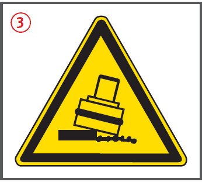
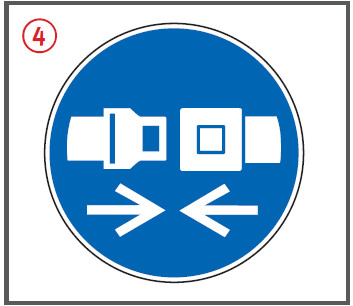
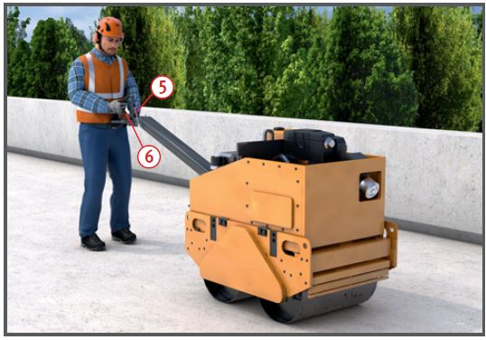
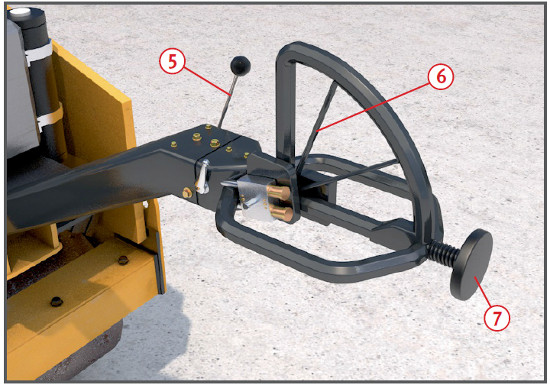

Personen können durch Kippen
und Überrollen insbesondere bei Rückwärtsfahrt der Walzen verletzt werden.
Allgemeines
Zum Verladen nur tragfähige Verladerampen benutzen.
Walzenbandagen nicht bei
laufender Walze säubern.
Wartungs- und betriebsbedingte
Arbeiten, z. B. Ein- und
Nachfüllen von Wasser, nur bei
stehender und gegen Abrollen
gesicherter Walze durchführen.
Beim Motorstart Fahrhebel in
Nullstellung setzen, damit ein
unbeabsichtigtes Ingangsetzen
ausgeschlossen ist .


Schutzmaßnahmen
Nicht schräg zum Hang,
sondern in der Falllinie fahren.
Vor dem Befahren von Gefällestrecken ist der dem Gefälle
entsprechende Fahrgang einzulegen.
Während der Fahrt im Gefälle
mit Walzen ohne lastschaltbare
Getriebe Gangschaltung nicht betätigen.
Bergab nicht mit ausgekuppeltem Motor fahren.
Im Fahrbereich von Walzen dürfen sich keine Beschäftigten aufhalten.
Beim Einsatz im ˆffentlichen Verkehrsraum Baustelle gem‰fl RSA sichern und Sicherheitsabst‰nde zwischen Arbeits- und Verkehrsbereich gem‰fl ASR A5.2 einhalten.
Zusätzliche Hinweise für Walzen mit Fahrerplatz
Walzen mit Überrollschutzkonstruktion (ROPS) und Sicherheitsgurt am Fahrersitz einsetzen
und beim Betrieb Sicherheitsgurt anlegen.
Drehsitze bei Walzen ermöglichen
auch bei Rückwärtsfahrt
den Blick in Fahrtrichtung.
Sie ersparen unbequemes und
trotzdem nicht immer ausreichendes
Umdrehen des Maschinenführers.
Damit können tote
Winkel deutlich reduziert werden
sowie Arbeit des Maschinenführers erleichtert und ergonomischer gestaltet werden.
Fahrerplätze müssen über
sicher begehbare Zugänge erreicht
und verlassen werden
können durch
beidseitig vom Aufstieg angebrachte Haltestangen bzw.
Haltegriffe ,
trittsichere Aufstiege (Tränen- oder Warzenbleche, Roste). Auftrittsflächen und Zugänge in trittsicherem Zustand halten.
Maschinenführerplätze, die
mehr als 1,00 m über Gelände
liegen, müssen Absturzsicherungen, z. B. Armlehnen oder
geschlossene Kabinen, haben.
Beim Betrieb Kabinentüren
schließen.
Elektrische Starteinrichtungen
müssen gegen unbefugtes
Ingangsetzen gesichert werden,
z. B. durch eine verschließbare
Kabine, ein Sicherheitszündschloss
oder eine verschließbare
Abdeckung.
Walzen dürfen nur vom Fahrerplatz
aus betrieben werden. Bei
eingeschränkten Sichtverhältnissen
einen Einweiser einsetzen.
Bei laufendem Motor unbeabsichtigte Fahrbewegungen durch festgelegten Fahrhebel ausschließen.
Warnzeichen in Fahrerkabine anbringen.
Zusätzliche Hinweise für Walzen für Mitgängerbetrieb
Kleindieselmotoren müssen
wegen der Rückschlaggefahr
beim Kurbelstart mit einer
Sicherheitsandrehkurbel besser
noch mit Batteriestarteinrichtungen
ausgerüstet sein.
Schalteinrichtung ohne Selbsthaltung
(Totmannschaltung)
nicht festlegen bzw. außer Funktion
setzen .
Besonders bei Rückwärtsfahrt
wegen Quetschgefahr neben
dem Deichselende gehen (trotz
Andrück-Schutzeinrichtung am
Deichselende ).
Bei Fahrt im Gefälle immer
bergseitig gehen.
Geschwindigkeit bei Fahrten
über Unebenheiten, Rampen
und Absätze vermindern, damit
ein Hochschlagen der Deichsel
vermieden wird.
Bei Infrarot-Fernsteuerung vor
Inbetriebnahme die Sende- und
Empfangselemente säubern.
Sicherstellen, dass fremde
Signale (z. B. andere Fernsteuereinrichtungen) nicht zu gefahrbringenden
Bewegungen führen.
Im und unmittelbar neben
dem öffentlichen Verkehrsbereich
Warnkleidung tragen.


Prüfungen
Art, Umfang und Fristen erforderlicher
Prüfungen festlegen
(Gefährdungsbeurteilung) und
einhalten, z. B.:
arbeitstäglich durch den
Maschinenführer,
nach Bedarf, mind. 1 x jährlich
durch eine „zur Prüfung
befähigte Person“ (z. B. Sachkundiger).
Ergebnisse der regelmäßigen
Prüfungen dokumentieren.
Arbeitsmedizinische Vorsorge
Arbeitsmedizinische Vorsorge
nach Ergebnis der Gefährdungsbeurteilung
veranlassen (Pflichtvorsorge)
oder anbieten (Angebotsvorsorge).
Hierzu Beratung
durch den Betriebsarzt.